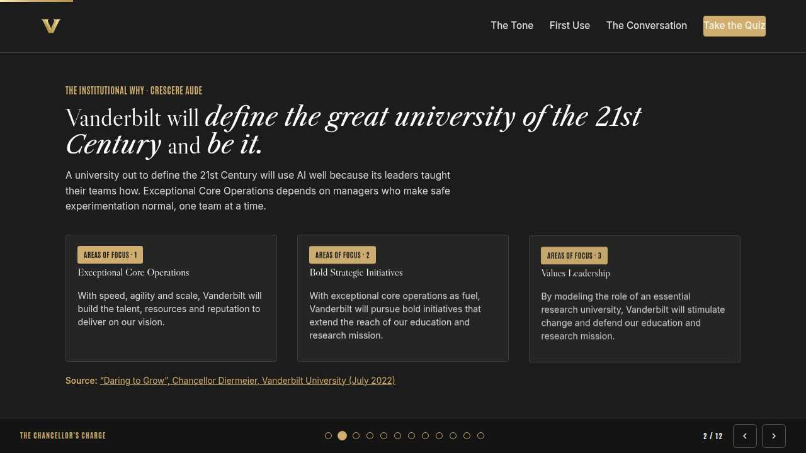
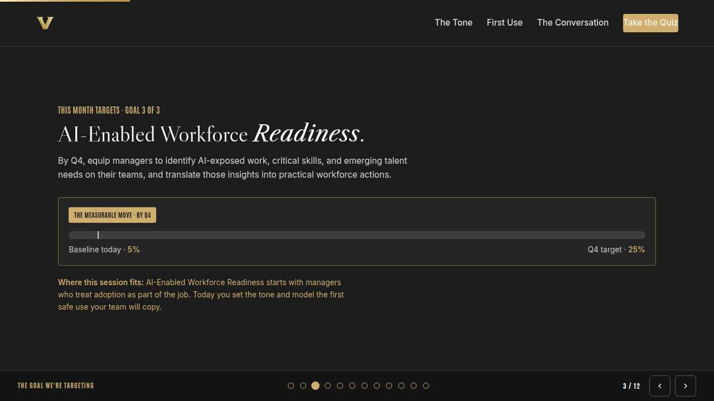
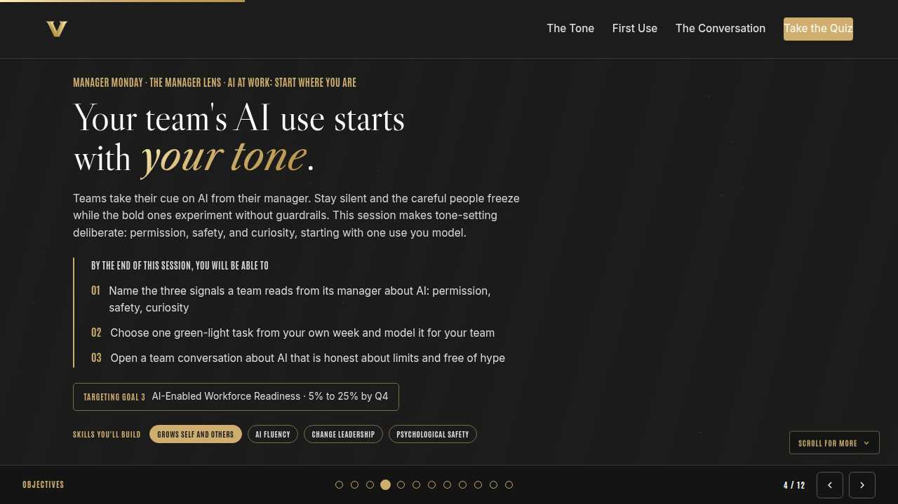
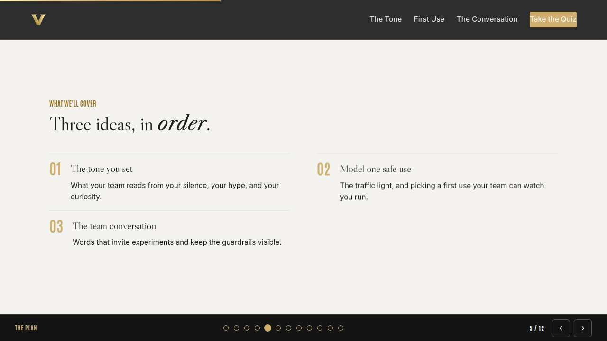
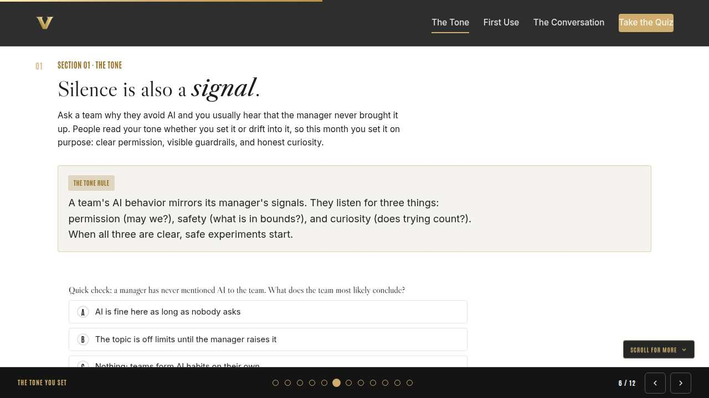
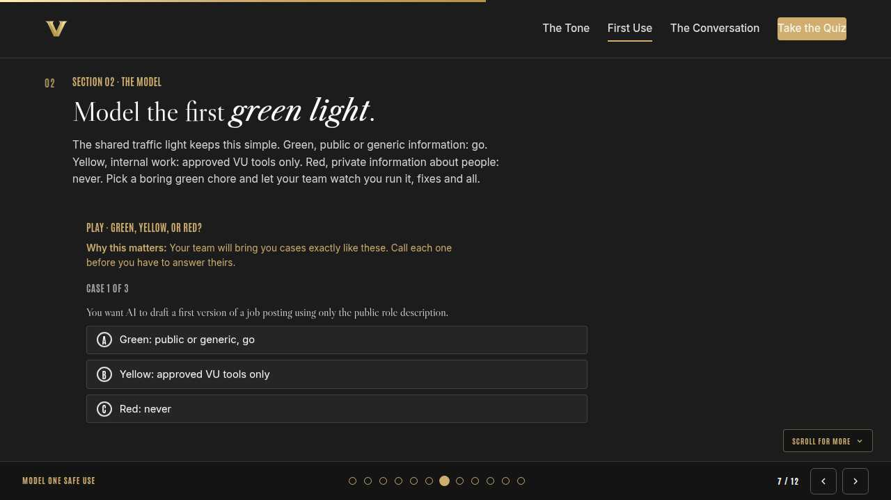
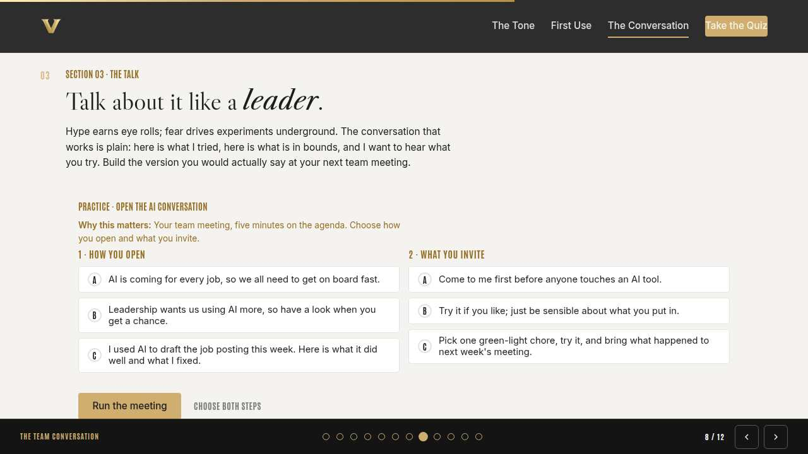
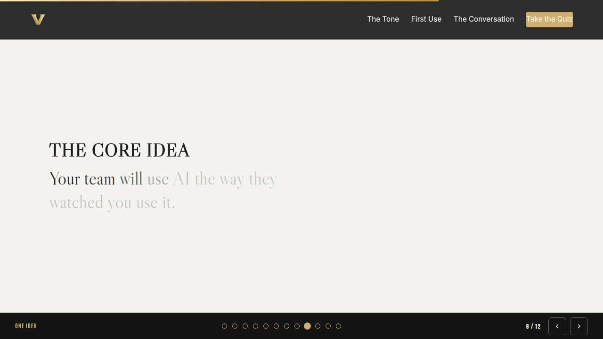
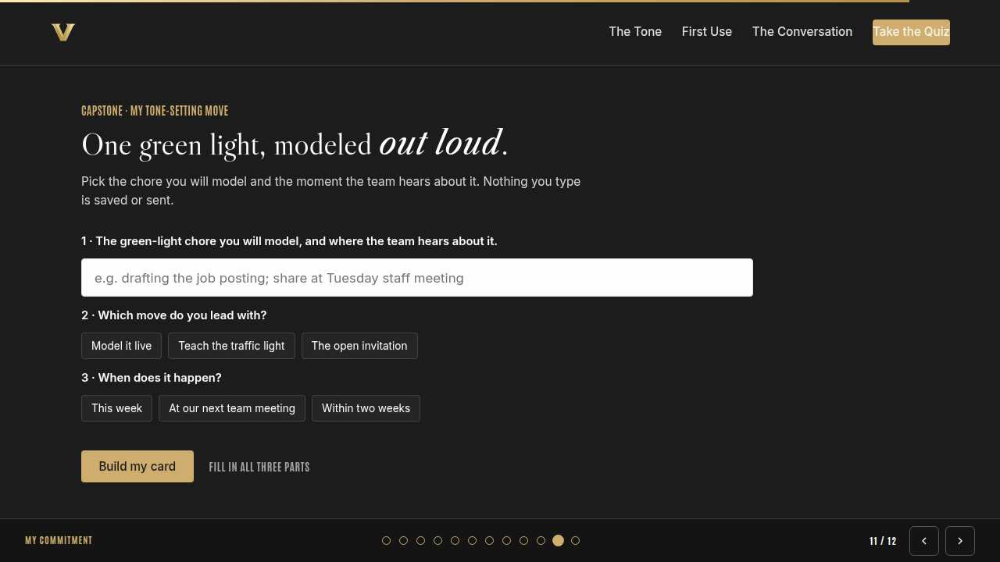
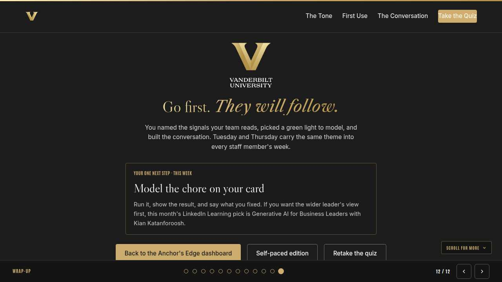

Vanderbilt · Anchor's Edge · ATD facilitator guide · print edition
Set the Tone, the facilitator guide

Run of show
| Screen | Full (min) | Core (min) |
|---|---|---|
| Welcome / QR | 2 | 1 |
| The mission | 2 | 1 |
| The goal we are targeting | 2 | 1 |
| Objectives | 1 | 1 |
| Agenda | 1 | skip |
| The tone you set | 8 | 6 |
| Model one safe use | 10 | 7 |
| The team conversation | 9 | 6 |
| The core idea | 1 | skip |
| Recap quiz | 4 | 3 |
| Capstone commitment | 4 | 3 |
| Closing | 1 | 1 |
| Total | 45 | 30 |
The goal this month serves
Goal 3, AI-Enabled Workforce Readiness. Baseline 5%, Q4 target 25%.
Audience
Vanderbilt people managers and team leads in the Anchor's Edge weekly rhythm. Works for 6 to 40 on a call; breakouts run in pairs. No prerequisites; December opens the AI at Work theme, and this is many managers' first AI session.
Room setup
Virtual, instructor led: camera on, deck link in chat, breakouts of 2 available. Learners follow on their own screens via the welcome-slide link or QR. Nothing typed into the deck is saved or sent.
Materials
- Meeting platform with screen share and breakout rooms; deck link ready to paste in chat
- Facilitator machine with the facilitator edition open; notifications off
- Learners on their own devices with the learner link
- Chat open for share-outs; the capstone copy button pastes there cleanly
A week before
- Run the learner edition start to finish and do every interaction honestly; you will demo at least one live.
- Read this month's theme page on the Anchor's Edge dashboard so the goal tie-in is fluent.
- Send the invite with the learner link and one line on what to bring.
The day before
- Test screen share with the facilitator edition; confirm the notes rail is readable.
- Open the learner link on a second device; the QR must land there.
- Run the section interactions once so you can drive them without reading.
30 minutes before
- Welcome slide up as people join; link pasted in chat.
- Close every other tab; silence the machine.
- Breakout rooms pre-configured in pairs.
When things go sideways
If Screen share or the site fails mid-session: Paste the learner link in chat and narrate from your own browser; every interaction runs on learner devices without the share.
If Breakout rooms are unavailable: Run the breakout prompts as 60-second chat storms: everyone types their answer at once, you read the best three aloud.
If A manager shares a story with private details about a named employee's AI mistake: Protect them warmly and immediately: 'Hold that. Roles, never names.' The lesson travels fine without the person attached.
If The room splits between AI enthusiasts and skeptics: Give each side one sentence, then point at the traffic light: it gives enthusiasts a lane and skeptics a boundary, and it asks both for the same small move.
Tough questions, ready answers
Q: I have never used an AI tool myself. How can I set the tone?
Start where you are; that is the month's theme. Pick one green-light chore, try it this week, and model it honestly, fixes and all. A manager learning out loud sets a better tone than an expert performing. The navigator-led First-AI-Win sandbox session is a guided place to do that first run.
Q: What if someone on my team is already pasting internal content into free tools?
Treat it as a signal of appetite, and address the boundary without shaming the experiment. Teach the traffic light, route the yellow work into approved VU tools, and thank them for surfacing it. Curiosity is fuel you want; it just needs the guardrails.
Q: Is AI adoption really my job? We have IT and a policy for that.
Policy and platforms set the outer boundary; daily behavior forms around what you permit and model. Your team builds its habits around you long before anyone reads a policy page. That is why this month treats adoption as a leadership responsibility, and why the ask is one modeled chore, small enough for any calendar.
Copy-paste templates
Pre-work invite (paste into the calendar invite)
Subject: Monday, 45 minutes on leading AI on your team. Bring one boring chore from your own week; you will leave knowing whether AI can safely take it. Zero AI experience needed. Live and interactive; have the session link open on your own screen.
7-day pulse (send one week after)
Subject: Did you model it? Three lines, reply whenever: 1) Did you model the green-light chore on your card? 2) What did the team say or try afterward? 3) What is the next green light you will point at?
After the session
Seven days out, send the pulse: 'Did you model the chore on your card? What did the team say or try afterward? What is the next green light you will point at?' Count of modeled first uses is the Level 3 metric for the month.
Welcome / QR Full 2 min · Core 1
Get everyone into the deck on their own screen and set the tone: 45 minutes, live, hands on.
Say
“Welcome to Manager Monday. Scan the code or click the link in chat so this session runs on your screen too. Forty-five minutes, one focus: Framing AI as a leadership responsibility.”
Do
- Slide up as people join; link pasted in chat every few minutes.
- State the norm once: type into your own screen, nothing you enter is saved or sent.
Watch for: People lurking without the deck open. The interactions only land if the deck is on their screen.
Transition: “Before the topic, thirty seconds on why Vanderbilt is asking for this hour.”

The mission Full 2 min · Core 1
Anchor the session in the Chancellor's charge so the next 40 minutes read as mission work, not admin.
Say
“This year of learning hangs off one sentence from the Chancellor: Vanderbilt will define the great university of the 21st Century and be it. A university out to define the 21st Century will use AI well because its leaders taught their teams how. Exceptional Core Operations depends on managers who make safe experimentation normal, one team at a time.”
Do
- Read the mission line slowly, once.
- Point at the tie-in line and let it sit; no discussion needed here.
Transition: “That is the why. Here is the number we are moving.”

The goal we are targeting Full 2 min · Core 1
Name the enterprise goal this month serves and the measurable move it needs.
Say
“Every month of Anchor's Edge lands on one of three enterprise goals. This month is Goal 3, AI-Enabled Workforce Readiness: By Q4, equip managers to identify AI-exposed work, critical skills, and emerging talent needs on their teams, and translate those insights into practical workforce actions. Today's baseline is 5%; the Q4 target is 25%. AI-Enabled Workforce Readiness starts with managers who treat adoption as part of the job. Today you set the tone and model the first safe use your team will copy.”
Do
- Let the meter animate before you speak to the number.
- One line, not a lecture: this session is one of the moves that closes the gap.
Transition: “Here is what you will be able to do in 45 minutes.”

Objectives Full 1 min · Core 1
Set the contract for the session in under a minute.
Say
“By the end of this session: name the three signals a team reads from its manager about ai: permission, safety, curiosity; choose one green-light task from your own week and model it for your team; open a team conversation about ai that is honest about limits and free of hype. That is the whole contract.”
Do
- Read the three objectives briskly; do not elaborate yet.
Transition: “Three stops to get there.”

Agenda Full 1 min · Core skip
Show the path so the room can pace itself.
Say
“Three stops: the tone you set, model one safe use, the team conversation. Each one has something to play with, so keep the deck open.”
Do
- Point once at each stop; ten seconds each.
Transition: “Stop one.”
Core path: Core: skip the read-through, gesture at the slide in passing.

The tone you set Full 8 min · Core 6
Establish that team AI behavior mirrors the manager's signals: permission, safety, curiosity.
Say
“Here is the finding this month is built on: teams take their AI cue from their manager, and silence is a cue too. Say nothing and the careful people freeze while the bold ones experiment with zero guardrails. The good news is that the tone is yours, so today we set it on purpose.”
Do
- Read the lead once, then go straight to the knowledge check; everyone answers on their own screen.
- Ask the room which answer they picked before revealing your own take.
- Run the breakout: what tone has your team read so far, 90 seconds each way.
Ask
“What tone do you suspect your own team has read from you so far?”
Expect:
- Honest admissions of silence
- A few who have been enthusiastic without guardrails
Respond: Both are common and both are fixable. The next two sections give you the model and the words.
Debrief: Permission, safety, curiosity. When the team can answer all three without asking you, the tone is set.
Watch for: Managers who feel behind because they have never used AI themselves. Name it early: this month assumes zero experience, and going first with a small chore counts double.
Transition: “The tone gets set fastest by what you model. Here is how to pick the first use.”
Core path: Core: skip the breakout; ask for one word in chat describing the team's current tone.

Model one safe use Full 10 min · Core 7
Install the traffic light and have every manager pick one green-light chore to model.
Say
“The traffic light is the whole safety model, and it travels because it is short. Green is public or generic information: go. Yellow is internal work: approved VU tools only. Red is private information about people: never. Your first modeled use should be a boring green chore, because boring is copyable.”
Do
- Run Green, yellow, or red? live; everyone plays on their own screen.
- After the red case, pause: ask why a kind intention leaves the light red.
- Run the breakout: one green-light chore from your own week.
Ask
“Why should your first modeled use be boring rather than impressive?”
Expect:
- Boring is easy to copy
- Impressive demos create distance
- Low stakes means mistakes teach cheaply
Respond: Right. The goal is a team full of small safe experiments, and those start from a chore everyone recognizes.
Debrief: The information decides the light every time. Green goes, yellow stays inside approved VU tools, red never goes in.
Watch for: Managers inventing edge cases to postpone action. Park edge cases in chat for the tough-questions bank and bring the room back to their one green chore.
Transition: “You have the use. Now the team needs to hear about it in the right tone.”
Core path: Core: run the trainer, skip the breakout, take one voice on the debrief question.

The team conversation Full 9 min · Core 6
Build an opening and an invitation that grant permission with the guardrails visible.
Say
“Two tones kill this conversation: hype and fear. Hype gets eye rolls, fear gets hidden experiments, and hidden experiments are where the real risk lives. The version that works is plain: here is what I tried, here is the traffic light, and I want to hear what you try. Let's build yours.”
Do
- Run Open the AI conversation; two minutes to make both choices and run it.
- Ask one volunteer to read their outcome aloud, weak or strong.
- Point at the pattern: a modeled use plus a specific invitation with the guardrail built in.
Ask
“What makes 'be sensible about what you put in' a weak guardrail?”
Expect:
- Everyone defines sensible differently
- It pushes the judgment onto the least informed person
Respond: Exactly. The traffic light exists so nobody has to improvise the boundary. Give the rule, then invite the experiment.
Debrief: The strong conversation has a shape: I tried this, here is the light system, bring me what you try.
Watch for: Managers drafting a policy memo in their heads. Keep it spoken and small; the tone lives in the meeting, and the memo can follow.
Transition: “Quick recap, then you build your own card.”
Core path: Core: everyone runs the builder solo; skip the read-aloud.

The core idea Full 1 min · Core skip
Land the one sentence the session exists to install.
Say
“If you keep one sentence from today, this is it. Read it once, out loud: Your team will use AI the way they watched you use it.”
Do
- Pause two beats after reading; the word animation carries it.
Transition: “The recap makes it stick.”
Core path: Core: pass through in stride; the sentence reads itself.

Recap quiz Full 4 min · Core 3
Score the learning while it is fresh; wrong answers are teaching moments, not failures.
Say
“Three questions, on your own screen. Answer honestly; the explanations are where the learning sticks.”
Do
- Give the room 90 seconds to run it individually.
- Ask for a show of results in chat: how many got 3 of 3?
- Read out the explanation for whichever question drew the most misses.
Watch for: Rushing past the why lines. The explanations carry the teaching.
Transition: “Now point it at your real week.”

Capstone commitment Full 4 min · Core 3
Convert the session into one named, dated action per person.
Say
“Now make it real. One green-light chore from your own week, one moment where the team hears about it. Pick the move, pick the window, build the card, and copy it somewhere you will see it before Friday. Two minutes, quiet, go.”
Do
- Two quiet minutes; everyone builds their own card.
- Invite two or three volunteers to read their card aloud or paste it in chat.
- Remind: copy the card somewhere you will see it this week.
Watch for: Vague entries. Nudge for a name-able situation and a real date.
Transition: “Last slide.”

Closing Full 1 min · Core 1
End with the next step and where this thread continues.
Say
“You leave with a tone to set and a chore to model. Tomorrow's Take-Off Tuesday is the hands-on session: every staff member picks one safe AI use case and runs it, so send your whole team. Thursday's Thrive Thursday builds adaptability, the skill of leading through the ambiguity that arrives with any new tool. And if you want more depth, this month's LinkedIn Learning course is Generative AI for Business Leaders with Kian Katanforoosh, and the navigators are hosting a First-AI-Win sandbox session for anyone who wants a guided first run.”
Do
- Point at the next-step card; one sentence.
- Name the rest of the week's rhythm: the other sessions echo this month's theme.
Generated from facilitator/notes.json. The on-screen facilitator edition lives at ./ alongside this guide.